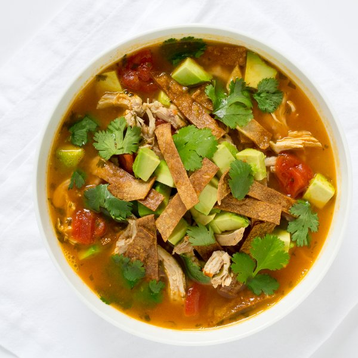

Mexican Chicken Soup with Avocado & Tortilla Crisps

Prep Time
45 min
Nutrition (per serving)
607.1 kcalCalories
49.4 gProtein
36.1 gCarbs
32.4 gFat
Full nutrition table
| Calories | 607.1 kcal |
| Total fat | 32.4 g |
| Saturated fat | 10.1 g |
| Trans fat | 0.1 g |
| Cholesterol | 124.2 mg |
| Sodium | 203 mg |
| Carbohydrates | 36.1 g |
| Fiber | 13.5 g |
| Sugars | 8.2 g |
| Protein | 49.4 g |
| Potassium | 1889.2 mg |
| Calcium | 148.7 mg |
| Iron | 4.1 mg |
| Vitamin A | 1111.4 IU |
| Vitamin C | 51 mg |
| Vitamin D | 1.7 IU |
Cookware
Ingredients
- 2avocados
- 1 ½ lbchicken breasts, boneless skinless
- 32 fl ozchicken or vegetable broth
- 1 small bunchcilantro
- 2 (14.5 oz) cansdiced tomatoes
- 4 clovesgarlic
- 2limes
- 4small corn tortillas
- 1 mediumyellow onion
- black pepper
- cumin, ground
- extra virgin olive oil
- salt
- virgin coconut oil
Steps
- Preheat the oven to 450°F and place the rack in the center position.
- Wash and dry the fresh produce.2 avocados
2 limes
1 small bunch cilantro - Juice the limes into a small bowl.
- Stack the tortillas; cut in half, then cut crosswise into ½-inch-wide strips and transfer to a baking sheet.4 small corn tortillas
- Drizzle the tortilla strips with olive oil and season with salt; toss to coat then spread out in a single layer.1 tbsp extra virgin olive oil
½ tsp salt - Place the tortilla strips in the oven and bake until golden brown and crispy, 6 to 8 minutes. Once done, remove from the oven and transfer to a paper towel lined plate.
- Preheat a skillet over medium heat.
- While the skillet heats up, pat the chicken dry with paper towels; holding a knife parallel to the cutting board, halve the breasts horizontally to form thin fillets. Season the chicken with salt and pepper on both sides.1 ½ lb chicken breasts, boneless skinless
1 tsp salt
½ tsp black pepper - Once the skillet is hot, add coconut oil and swirl to coat the bottom.1 tbsp virgin coconut oil
- Add the chicken to the skillet; cook until golden brown and cooked through, 3 to 4 minutes per side. Once done, transfer to a plate to cool. Cook in batches if necessary.
- While the chicken cooks, preheat a medium saucepan over medium heat.
- Trim off and discard the ends of the onion and remove the outer layer; small dice the onion (cut into ¼-inch pieces).1 medium yellow onion
- Once the saucepan is hot, add coconut oil and swirl to coat the bottom.1 tbsp virgin coconut oil
- Add the onion to the saucepan; cook, stirring frequently, until softened, 3 to 5 minutes.
- Trim off and discard the root ends of the garlic; peel and mince or press the garlic.4 cloves garlic
- Add the garlic, cumin, salt, and pepper to the onion; stir until fragrant, 15 to 30 seconds.1 tsp cumin
½ tsp salt
¼ tsp black pepper - Add the broth, tomatoes, and lime juice to the saucepan. Bring the mixture to a boil, then reduce the heat to a simmer and cook for 8 to 10 minutes.32 fl oz (4 cups) chicken or vegetable broth
2 (14.5 oz) cans diced tomaotes - Using two forks, shred the chicken into bite-sized pieces and add to the soup immediately.
- Halve the avocados lengthwise and twist the halves to separate, then remove the pit with a knife or spoon; scoop out and medium dice the flesh. Transfer to a small bowl.
- Using a knife, shave the cilantro leaves off the stems at a downward angle, working away from your body; discard the stems and finely chop the leaves. Stir the cilantro into the soup.
- To serve, divide the soup between bowls, then top with the avocado and tortilla crisps. Enjoy!